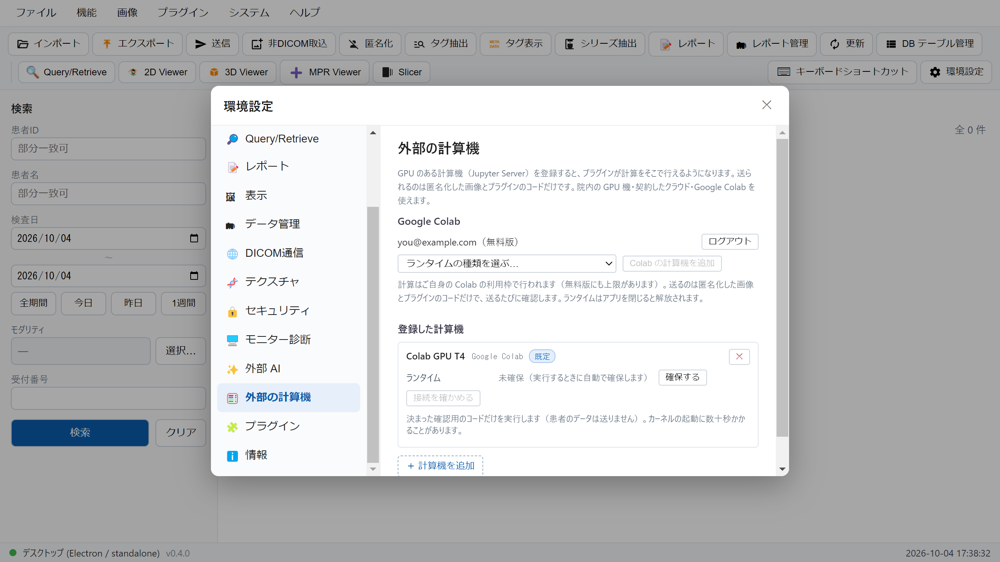
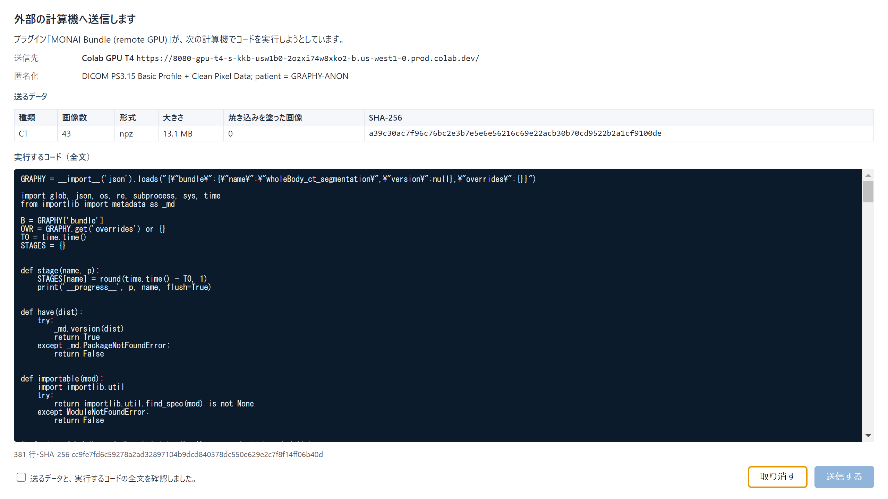
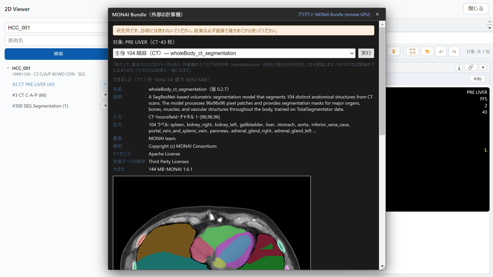
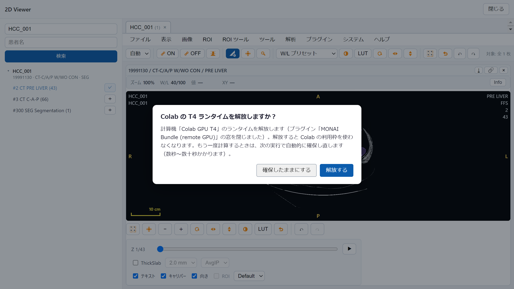

GRAPHY-NEXT v0.4.0 / 操作ガイド
外部の計算機（Google Colab の GPU・自分で立てた Jupyter）でプラグインの計算を動かせるようになりました。公式プラグイン「MONAI Bundle」で、CT から臓器を分割して ROI マネージャに読み込めます。
環境設定 ＞ 外部の計算機 で Google でログイン計算機が未登録なら、最初の実行で Colab の GPU T4 が自動で登録されます
スタディ一覧で患者 ID HCC_001 を検索し、#2 PRE LIVER を 2D Viewer で開く
メニュー「解析」→「MONAI Bundle (remote GPU)」公式プラグインはインストーラに同梱され、初回起動で入ります
STEP 1 / 環境設定 ＞ 外部の計算機

ログインした Google アカウントとプラン。計算はご自身の Colab の利用枠で行われます
既定の計算機。プラグインが計算機を指定しないときに使います（Colab の T4 があればそれ）
ランタイムの確保・解放。実行するときは自動で確保します
自分で立てた Jupyter Server も登録できます（トークンは OS の鍵束に保存）。
無料版の Colab は医療情報の取り扱い（HIPAA 等）の対象外です。送るのは匿名化した画像とコードだけです。
STEP 2 / 送る前の確認（本体の窓）

送り先（あなたの Colab のランタイム）
送るデータ。本体が匿名化して作り、SHA-256 を出します
計算機で実行するコードの全文
確認のチェックを入れてから「送信する」
この窓は本体が出します。プラグインからは出さずに済ませたり、書き換えたりできません。
送ったこと・結果は監査ログ（compute-audit.jsonl）に残ります。画素は残しません。
STEP 3 / MONAI Bundle・#2 PRE LIVER

モデルを選ぶ（MONAI Model Zoo の 8 本。合わない種類の画像には選べません）
「実行」。Colab の上でモデルの説明を読み、使えるかを判定してから推論します
所要時間・GPU・使ったメモリ
結果の下見。臓器名つきで ROI マネージャに読み込まれ、選んだラベルは DICOM SEG で保存できます
| モデル | 対象 |
|---|---|
| 全身 104・腹部 13 / 7 臓器 | CT |
| 脾臓・膵臓・腎臓 | CT |
| 前立腺・脳 133 領域 | MR |
STEP 4 / 終わったら

「解放する」で Colab の利用枠を使わなくなります
続けて計算するなら「確保したままにする」
解放しても、次の「実行」で自動的に確保し直します（数秒〜数十秒）。
アプリを閉じたときも解放されます。